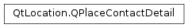

QPlaceContactDetail¶
Synopsis¶
Detailed Description¶
The
PySide2.QtLocation.QPlaceContactDetailclass represents a contact detail such as a phone number or website url.The detail consists of a label and value. The label is a localized string that can be presented to the end user that describes that detail value which is the actual phone number, email address and so on.
Contact Types¶
The
PySide2.QtLocation.QPlaceContactDetailclass defines some constant strings which characterize standard contact types .
- QPlaceContactDetail::Phone
- QPlaceContactDetail::Email
- QPlaceContactDetail::Website
- QPlaceContactDetail::Fax
These types are used to access and modify contact details in
PySide2.QtLocation.QPlacevia:
QPlace.contactDetails()QPlace.setContactDetails()QPlace.appendContactDetail()QPlace.contactTypes()The contact type is intended to be a string type so that providers are able to introduce new contact types if necessary.
-
class
PySide2.QtLocation.QPlaceContactDetail¶ -
class
PySide2.QtLocation.QPlaceContactDetail(other) Parameters: other – PySide2.QtLocation.QPlaceContactDetailConstructs a contact detail.
Creates a copy of
other.
-
PySide2.QtLocation.QPlaceContactDetail.Phone¶
-
PySide2.QtLocation.QPlaceContactDetail.Email¶
-
PySide2.QtLocation.QPlaceContactDetail.Website¶
-
PySide2.QtLocation.QPlaceContactDetail.Fax¶
-
PySide2.QtLocation.QPlaceContactDetail.clear()¶ Clears the contact detail.
-
PySide2.QtLocation.QPlaceContactDetail.label()¶ Return type: unicode Returns a label describing the contact detail.
The label can potentially be localized. The language is dependent on the entity that sets it, typically this is the manager from which the places are sourced. The
QPlaceManager.locales()field defines what language is used.
-
PySide2.QtLocation.QPlaceContactDetail.__ne__(other)¶ Parameters: other – PySide2.QtLocation.QPlaceContactDetailReturn type: PySide2.QtCore.boolReturns true if
otheris not equal to this contact detail, otherwise returns false.
-
PySide2.QtLocation.QPlaceContactDetail.__eq__(other)¶ Parameters: other – PySide2.QtLocation.QPlaceContactDetailReturn type: PySide2.QtCore.boolReturns true if
otheris equal to this contact detail, otherwise returns false.
-
PySide2.QtLocation.QPlaceContactDetail.setLabel(label)¶ Parameters: label – unicode Sets the
labelof the contact detail.
-
PySide2.QtLocation.QPlaceContactDetail.setValue(value)¶ Parameters: value – unicode Sets the
valueof this contact detail.
-
PySide2.QtLocation.QPlaceContactDetail.value()¶ Return type: unicode Returns the value of the contact detail.
© 2018 The Qt Company Ltd. Documentation contributions included herein are the copyrights of their respective owners. The documentation provided herein is licensed under the terms of the GNU Free Documentation License version 1.3 as published by the Free Software Foundation. Qt and respective logos are trademarks of The Qt Company Ltd. in Finland and/or other countries worldwide. All other trademarks are property of their respective owners.